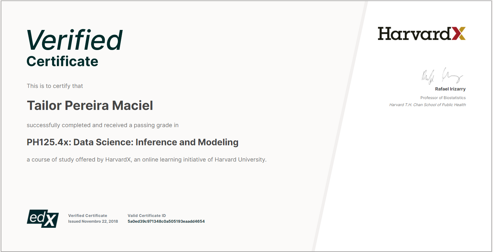
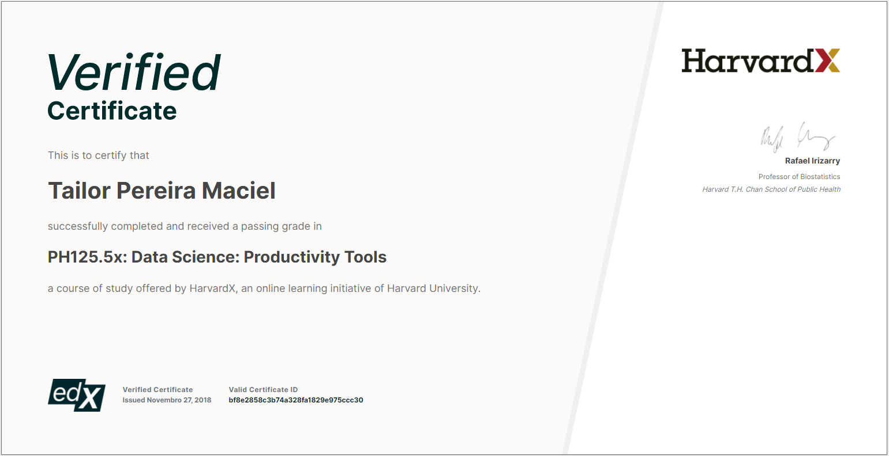
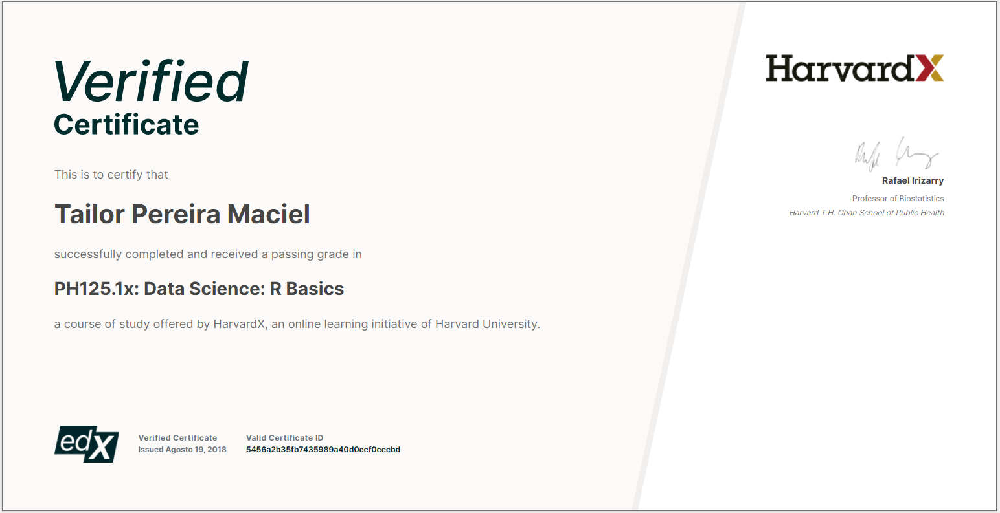
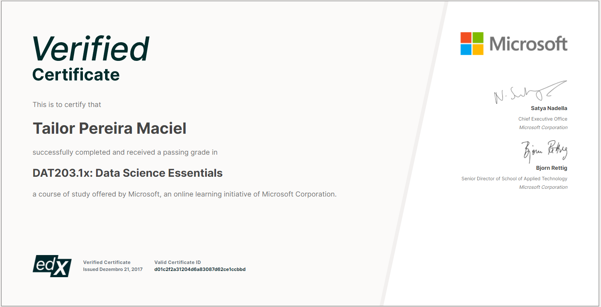
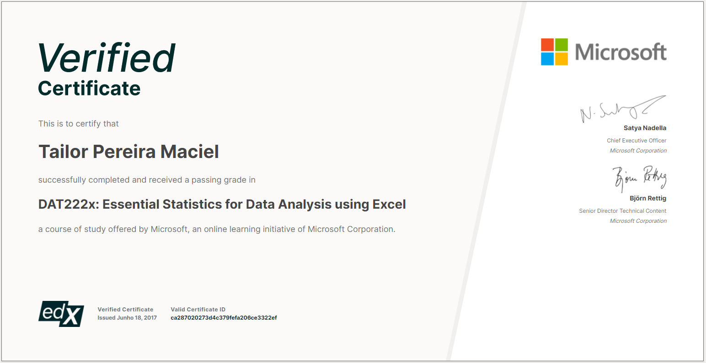
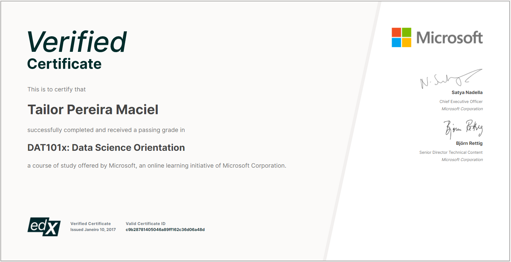

240 créditos em computação pela University of London, formação em gestão e certificações em ciência de dados.
Completei 240 créditos do programa BSc Computer Science da University of London (Levels 4 e 5), oferecido online pela Coursera e dirigido por Goldsmiths, University of London.
O currículo enfatizou programação prática com P5.js, C++, Python e SQL, além de fundamentos sólidos em bancos de dados, desenvolvimento web, arquitetura de sistemas e ciência de dados.
Tópicos centrais: programação orientada a objetos, princípios de design de software, estruturas de dados, pensamento algorítmico e fundamentos matemáticos essenciais ao raciocínio em computação.
Formação focada em ferramentas de gestão para processos produtivos e organizacionais, com ênfase em gerenciamento de projetos, pensamento sistêmico e marketing.
Aprendi a importância das relações humanas e da comunicação nas rotinas de negócio — uma base que moldou praticamente todas as relações profissionais que construí desde então.
Google, HarvardX (edX) e Microsoft Learn — cobrindo TI, ciência de dados, machine learning e analytics.






Seja uma colaboração, uma conversa sobre sistemas de dados ou um interesse comum em como tecnologia transforma negócios, estou aberto a essa troca.